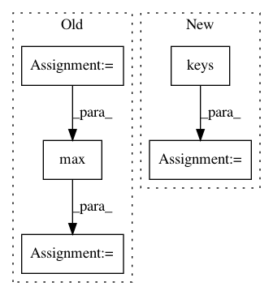

560b8b450da344aff0b9d6ff9751c1230c1b07ec,flow/envs/green_wave_env.py,PO_TrafficLightGridEnv,__init__,#PO_TrafficLightGridEnv#Any#Any#Any#,458
Before Change
self.num_observed = env_params.additional_params.get("num_observed", 2)
// used while computing the reward
self.env_params.additional_params["target_velocity"] = \
max(self.scenario.speed_limit(edge)
for edge in self.scenario.get_edge_list())
// used during visualization
self.observed_ids = []
After Change
def __init__(self, env_params, sumo_params, scenario):
super().__init__(env_params, sumo_params, scenario)
for p in ADDITIONAL_PO_ENV_PARAMS.keys():
if p not in env_params.additional_params:
raise KeyError(
"Environment parameter "{}" not supplied".format(p))
// number of vehicles nearest each intersection that is observed in the
// state space; defaults to 2
self.num_observed = env_params.additional_params.get("num_observed", 2)
// used during visualization
self.observed_ids = []
In pattern: SUPERPATTERN
Frequency: 3
Non-data size: 5
Instances
Project Name: flow-project/flow
Commit Name: 560b8b450da344aff0b9d6ff9751c1230c1b07ec
Time: 2018-09-20
Author: kathyjang@gmail.com
File Name: flow/envs/green_wave_env.py
Class Name: PO_TrafficLightGridEnv
Method Name: __init__
Project Name: kymatio/kymatio
Commit Name: 03b37448e0a82c82f80f5fedfd7bf263852ec87b
Time: 2018-11-21
Author: AndreuxMath@users.noreply.github.com
File Name: scattering/scattering1d/filter_bank.py
Class Name:
Method Name: scattering_filter_factory
Project Name: etal/cnvkit
Commit Name: 89361f771b5076918b1ce9be9a7d4f2738569ae0
Time: 2015-11-09
Author: eric.talevich@gmail.com
File Name: cnvlib/antitarget.py
Class Name:
Method Name: guess_chromosome_regions